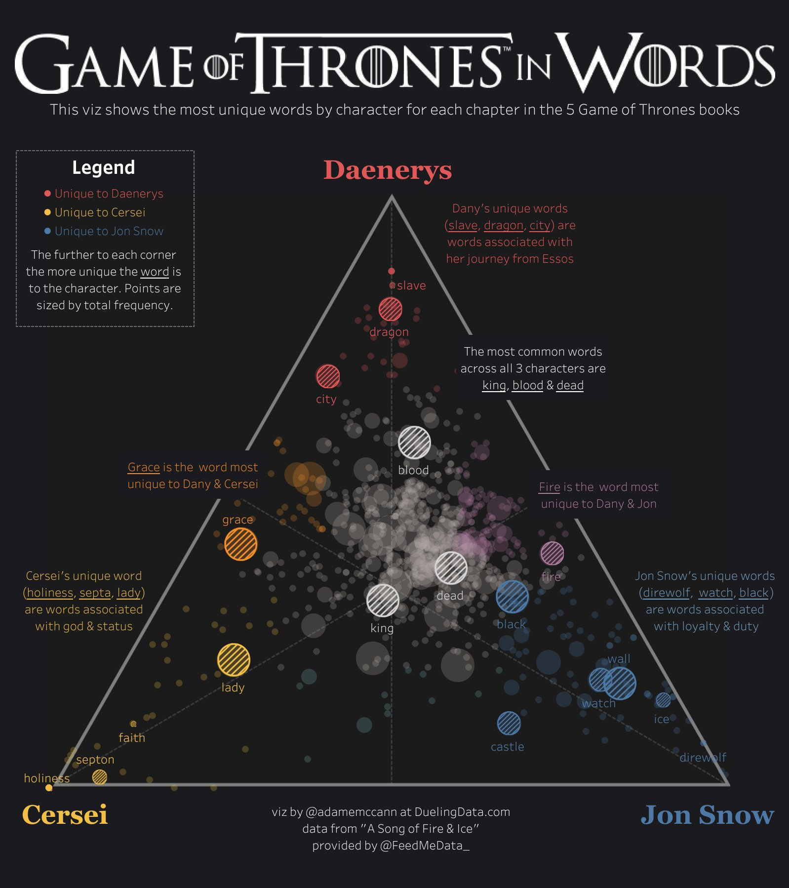

Best Data Visualization Blogs to Follow
Best blogs to follow.
 Image Credit:[Google Images]
Image Credit:[Google Images]
Consuming large sets of data isn’t always straightforward. Sometimes, data sets are so large that it’s downright impossible to discern anything useful from them. That’s where data visualizations come in.
Creating data visualizations is rarely straightforward. It’s not as if designers can simply take a data set with thousands of entries and create a visualization from scratch. Sure, it’s possible, but who wants to spend dozens or hundreds of hours plotting dots on a scatter chart? That’s where data visualization tools come in.
If you’re at all familiar with data analysis, then you’ve encountered data visualization. It is a key part of data analysis. We’ll explain how it is used and discuss each of the different types of visualizations, but first let’s make sure we all understand what it is and why it’s important.
Table of Contents
What Are Data Visualization Tools?
Data visualization tools provide data visualization designers with an easier way to create visual representations of large data sets. When dealing with data sets that include hundreds of thousands or millions of data points, automating the process of creating a visualization at least in part, makes a designer’s job significantly easier.
These data visualizations can then be used for a variety of purposes: dashboards, annual reports, sales and marketing materials, investor slide decks, and virtually anywhere else information needs to be interpreted immediately.
What is data visualization and why is it important?
Data visualization is the representation of data or information in a graph, chart, or other visual format. It communicates relationships of the data with images. This is important because it allows trends and patterns to be more easily seen. With the rise of big data upon us, we need to be able to interpret increasingly larger batches of data. Machine learning makes it easier to conduct analyses such as predictive analysis, which can then serve as helpful visualizations to present. But data visualization is not only important for data scientists and data analysts, it is necessary to understand data visualization in any career. Whether you work in finance, marketing, tech, design, or anything else, you need to visualize data. That fact showcases the importance of data visualization.
Why do we need data visualization?
We need data visualization because a visual summary of information makes it easier to identify patterns and trends than looking through thousands of rows on a spreadsheet. It’s the way the human brain works. Since the purpose of data analysis is to gain insights, data is much more valuable when it is visualized. Even if a data analyst can pull insights from data without visualization, it will be more difficult to communicate the meaning without visualization. Charts and graphs make communicating data findings easier even if you can identify the patterns without them.
In undergraduate business schools, students are often taught the importance of presenting data findings with visualization. Without a visual representation of the insights, it can be hard for the audience to grasp the true meaning of the findings. For example, rattling off numbers to your boss won’t tell them why they should care about the data, but showing them a graph of how much money the insights could save/make them is sure to get their attention.
How is data visualization used?
Data visualization has many uses. Each type of data visualization can be used in different ways. We’ll get into the different types in a moment, but for now, here are some of the most common ways data visualization is used.
Changes over time
This is perhaps the most basic and common use of data visualization, but that doesn’t mean it’s not valuable. The reason it is the most common is because most data has an element of time involved. Therefore, the first step in a lot of data analyses is to see how the data trends over time.
Determining frequency
Frequency is also a fairly basic use of data visualization because it also applies to data that involves time. If time is involved, it is logical that you should determine how often the relevant events happen over time.
Determining relationships (correlations)
Identifying correlations is an extremely valuable use of data visualization. It is extremely difficult to determine the relationship between two variables without a visualization, yet it is important to be aware of relationships in data. This is a great example of the value of data visualization in data analysis.
Examining a network
An example of examining a network with data visualization can be seen in market research. Marketing professionals need to know which audiences to target with their message, so they analyze the entire market to identify audience clusters, bridges between the clusters, influencers within clusters, and outliers.
Scheduling
When planning out a schedule or timeline for a complex project, things can get confusing. A Gantt chart solves that issue by clearly illustrating each task within the project and how long it will take to complete.
Analyzing value and risk
Determining complex metrics such as value and risk requires many different variables to be factored in, making it almost impossible to see accurately with a plain spreadsheet. Data visualization can be as simple as color-coding a formula to show which opportunities are valuable and which are risky.
Types of data visualization charts
Now that we understand how data visualization can be used, let’s apply the different types of data visualization to their uses. There are numerous tools available to help create data visualizations. Some are more manual and some are automated, but either way they should allow you to make any of the following types of visualizations.
Line chart
A line chart illustrates changes over time. The x-axis is usually a period of time, while the y-axis is quantity. So, this could illustrate a company’s sales for the year broken down by month or how many units a factory produced each day for the past week.
Area chart
An area chart is an adaptation of a line chart where the area under the line is filled in to emphasize its significance. The color fill for the area under each line should be somewhat transparent so that overlapping areas can be discerned.
Bar chart
A bar chart also illustrates changes over time. But if there is more than one variable, a bar chart can make it easier to compare the data for each variable at each moment in time. For example, a bar chart could compare the company’s sales from this year to last year.
Histogram
A histogram looks like a bar chart, but measures frequency rather than trends over time. The x-axis of a histogram lists the “bins” or intervals of the variable, and the y-axis is frequency, so each bar represents the frequency of that bin. For example, you could measure the frequencies of each answer to a survey question. The bins would be the answer: “unsatisfactory,” “neutral,” and “satisfactory.” This would tell you how many people gave each answer.
Scatter plot
Scatter plots are used to find correlations. Each point on a scatter plot means “when x = this, then y equals this.” That way, if the points trend a certain way (upward to the left, downward to the right, etc.) there is a relationship between them. If the plot is truly scattered with no trend at all, then the variables do not affect each other at all.
Bubble chart
A bubble chart is an adaptation of a scatter plot, where each point is illustrated as a bubble whose area has meaning in addition to its placement on the axes. A pain point associated with bubble charts is the limitations on sizes of bubbles due to the limited space within the axes. So, not all data will fit effectively in this type of visualization.
Pie chart
A pie chart is the best option for illustrating percentages, because it shows each element as part of a whole. So, if your data explains a breakdown in percentages, a pie chart will clearly present the pieces in the proper proportions.
Gauge
A gauge can be used to illustrate the distance between intervals. This can be presented as a round clock-like gauge or as a tube type gauge resembling a liquid thermometer. Multiple gauges can be shown next to each other to illustrate the difference between multiple intervals.
Map
Much of the data dealt with in businesses has a location element, which makes it easy to illustrate on a map. An example of a map visualization is mapping the number of purchases customers made in each state in the U.S. In this example, each state would be shaded in and states with less purchases would be a lighter shade, while states with more purchases would be darker shades. Location information can also be very valuable for business leadership to understand, making this an important data visualization to use.
Heat map
A heat map is basically a color-coded matrix. A formula is used to color each cell of the matrix is shaded to represent the relative value or risk of that cell. Usually heat map colors range from green to red, with green being a better result and red being worse. This type of visualization is helpful because colors are quicker to interpret than numbers.
Frame diagram
Frame diagrams are basically tree maps which clearly show hierarchical relationship structure. A frame diagram consists of branches, which each have more branches connecting to them with each level of the diagram consisting of more and more branches.
Conclusion
Effective data visualization is the crucial final step of data analysis. Without it, important insights and messages can be lost. Import.io understands the importance of data visualization, which is why it’s included in our Web Data Integration solution. Not only does Web Data Integration extract the data your organization needs from anywhere on the web, it takes that data all the way through the data analysis process of preparation, integration, and consumption giving you easily consumable charts and graphs to gain insights from.
A data visualization of unique words used by three central characters in the Game of Thrones book series.

Here is the list of the Blogs to follow
- Story telling with Data
- Information is Beautiful
- Flowing Data
- Visualizing Data
- Junk Charts
- The Pudding
- Data Plus Science
- Graphic Detail
- Any Chart Blog
- Tableau Blog
PATOORI BHANU PRAKASH
Research Scholar of Management Studies
His research interests include distributed robotics, mobile computing and programmable matter.